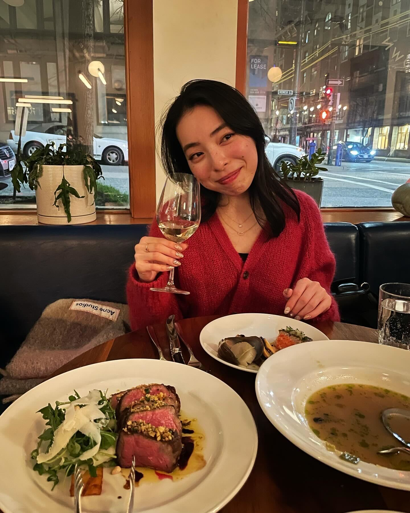
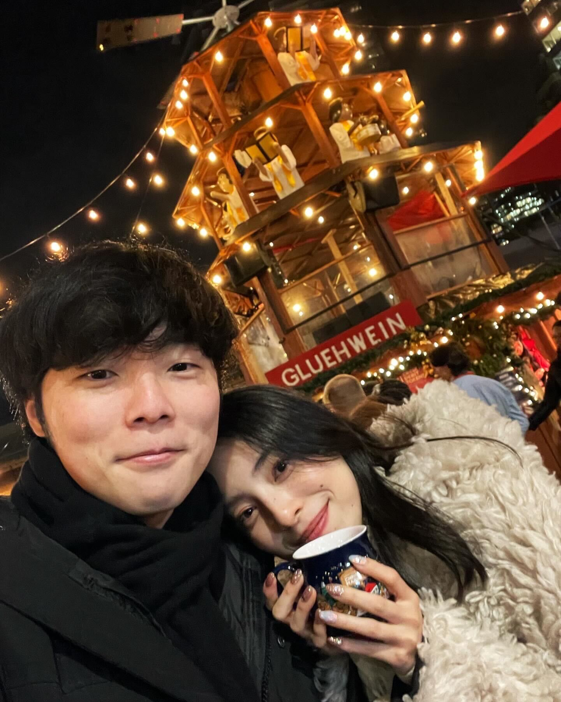

Merry
Christmas
Merry Christmas, Mei!
Thank you for the amazing Christmas dinner and the sweet time last night. It was our second Christmas celebration in Vancouver. I was very happy, and I wanted to express my appreciation. You are always supportive, honest, and kind to me. I cannot find enough words to express my feelings and love for you. I am looking forward to spending the rest of my life with you.
Thank you, and I love you.
She prepared Christmas dinner on Christmas night, and it was absolutely delicious. The chicken and roast beef were particularly outstanding. The chicken had a wonderfully crispy skin with a delightful teriyaki flavor. The roast beef had a perfect texture—slightly soft, yet still chewy and juicy. Every dish was excellent, and we thoroughly enjoyed the meal.
We visited Autostrada Osteria before Christmas to celebrate our monthly anniversary and the upcoming holiday. Although it was our first time there, we had an amazing dinner experience due to the restaurant's great ambiance and the server's funny and kind demeanor. Autostrada Osteria is known for its pasta and risotto, so we ordered pasta, veal, beef steak, and fish soup. The dishes were delicious, and we were eager to return. Unfortunately, we recently learned that the restaurant is closing. Now, we need to find an alternative, but we doubt we'll find a place that satisfies us as much as Autostrada Osteria did.
We also visited the Christmas market, and it turned out to be a lot of fun. We were pleasantly surprised by the large crowd, and there was even a long line for reserved times. So, we decided to change our plans and grab sushi first. It was a great idea, and we found ourselves missing Sushi Yan. After enjoying our sushi, we strolled through almost all of the market's stores. We got a cup of hot wine and the specific item she wanted this year. I couldn't resist trying a hurricane potato, which was both long and tasty. The wine had its effect on me, and I started feeling a bit drunk. Nevertheless, it was a fun night! While we didn't get to see any snow, the weather wasn't too cold, so everything was okay.